Uma obra de arte é uma criação humana que expressa ideias, emoções ou conceitos estéticos por meio de diferentes mídias, como pintura, escultura, música ou texto. A arte tem um propósito comunicativo, transmitindo mensagens e provocando reflexões no espectador, além de poder ser um objeto de valor prático ou simbólico. O que é considerado obra de arte pode variar dependendo do contexto histórico e cultural.
Preparação para FICCA 14 e 15 outubro/2008
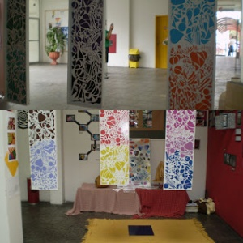
Outubro 2008
Feira Itinerante de Cultura Arte e Artesanato
FICAA / CEART / UDESC dias :14 E 15
E um evento que é realizado em algumas datas do ano letivo, participam alunos, professores, artistas convidados e pessoas da comunidade. Meu agradecimento aos organizadores, professores, colegas e amigos que de alguma forma contribuíram para o trabalho tivesse visibilidade. O propósito é interação com arte, algumas imagens no evento.
 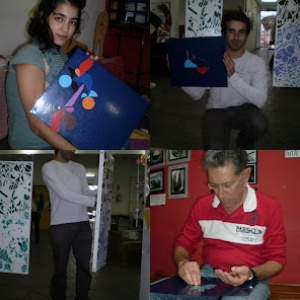
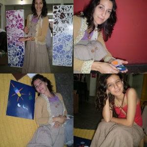
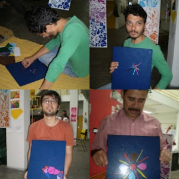
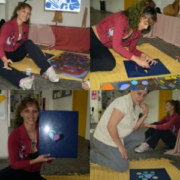
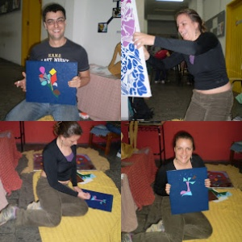
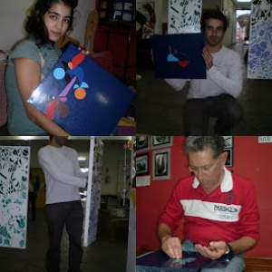
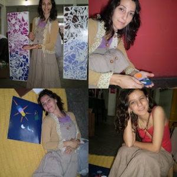
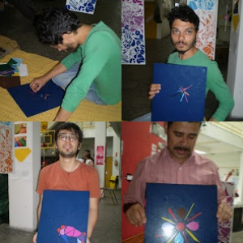
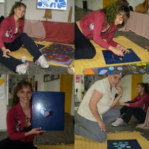
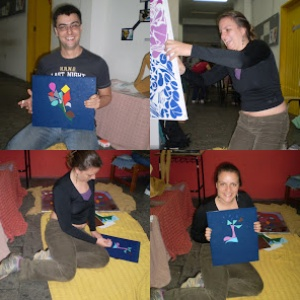
 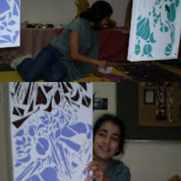
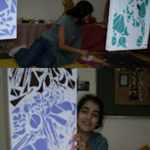